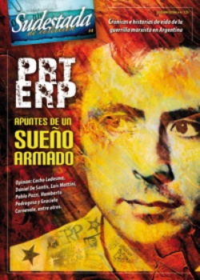

Buscar
"Santucho confiaba en que la práctica curaba todo"
Esa ambivalencia entre profundidad y fuga en su mirada me desconcertaba. Nunca pude determinar si era una manifestación de timidez o una inconsciente toma de distancia con el interlocutor. Quizás ambas cosas. Porque la timidez se eclipsaba con su envidiable seguridad, expresada en todos los casos con extrema sencillez. (...) Santucho persuadía, convencía. Pero no convencía porque era el que más sabía -si de conocimientos adquiridos se tratase-, convencía porque era el que más creía", señala Luis Mattini en su libro Los perros.
Edición Especial N° 4
PRT-ERP (Apuntes de un sueño armado)
Sudestada de Colección
Comprar edición impresaSumario
- Apuntes de un sueño armado II
- Apuntes de un sueño armado I
- Un partido, una historia
- "El PRT-ERP puso sobre la mesa el tema del poder"
- "Santucho confiaba en que la práctica curaba todo"
- Apuntes de un sueño armado III
- "El PRT-ERP tuvo contra las cuerdas a la burguesía"
Compartir Articulo
Después de compartir durante varios años la experiencia de la dirección política del PRT-ERP, Mattini fue designado para ocupar la secretaría general del partido después de la caída en combate de Mario Roberto Santucho, en julio de 1976. Más allá de los tiempos que siguieron, la división y extinción del PRT como organización y de los varios debates (no siempre muy fraternos que digamos) que sigue protagonizando con otros ex militantes; la palabra de Mattini nos permite hoy acercarnos un poco a uno de los personajes relevantes del siglo pasado en Argentina.
-¿Qué elementos hay que tener en cuenta para comprender la ascendencia de Santucho en el PRT-ERP?
-Yo sentía esa influencia. Era una atracción que sentías por un tipo que ves que tiene algo. Pero a mí me resultaba un poco más fácil separar las cosas: no era el más valiente, porque había muchos tan valientes como él; y tampoco era un gran orador, por circunstancias de la vida y porque no eran muchos los buenos oradores del partido. Lo que quiero decir es que no era más que el común de los cuadros que tenía el PRT en ese momento, en algunos aspectos descollaba más uno que otro pero en ese nivel era muy parejo todo. Entonces qué queda... Creo que Santucho tenía una cosa que tiene que ver más con el deseo que con la percepción de conciencia. Tiene que ver con un tipo que está absolutamente convencido de que el camino es ese, y tiene una enorme capacidad de persuasión sobre los demás. No demostraba dudas, a diferencia de los demás que sí las teníamos. Entonces vos zanjabas las dudas con él. Era una referencia, alguien que tenía una percepción sobre la vida de las personas que servía como guía, y ese es el fenómeno de los líderes, que no se puede describir con palabras. Pero el efecto existía.
Santucho era indiscutible. A nadie se le podía ocurrir dudar de su liderazgo. Vos podías discutir con él un montón de aspectos parciales, me acuerdo de que discutíamos mucho el tema sindical, pero el liderazgo no. Esa cosa que el tipo tenía que lo hacía un líder, un líder extraño incluso, porque no tenía un discurso muy potente. Un elemento que a mí me parece muy fuerte es que era un tipo que lo que decía, lo hacía. Y en aquellos años, cuando había muchos charlatanes, Santucho siempre se ponía adelante para hacer cualquier cosa que se votara. Tanto es así, que cuando se desarrolló el PRT tuvimos que tomar medidas orgánicas para frenarlo, porque se anotaba en todas. Esa fue una propuesta mía después de que cayó preso, porque era una barbaridad arriesgar a un dirigente de ese tipo en operaciones que podían hacer otros cuadros. Y se votó que no participara en ninguna operación militar en las ciudades, hasta que no se afirmara la guerrilla en el monte, por lo menos. Pero lo teníamos que atar. Y él votó en contra de esa medida, pero se la ganamos.
-¿Santucho era consciente de esa influencia?
-Era consciente y tenía muy asimilado el papel que jugaba. Él sabía que jugaba un papel determinante y eso hacía que controlara su conducta. Porque al ser el referente, después se transformaba en un modelo para la militancia. Una cosa que me llamaba la atención era su extremo cuidado, no se le escapaba detalle, y eso para mí fue una autoconstrucción formidable, porque después su hermano me contó que Robi era un tipo muy distraído, de esos que se embalan y se olvidan de lo que pasa alrededor. Eso lo corrigió con fuerza de voluntad, por eso cada vez se autoconstruía más. Lo mismo ante una situación grave, no perdía nunca la serenidad ni la tranquilidad. Lo lograba mejor que nadie, por eso ante la desesperación del resto uno siempre iba a encontrar al tipo tranquilo.
(La nota completa en la edición Sudestada de colección # 4 PRT-ERP)
Comentarios

Sudestada
El colectivo de Revista Sudestada esta integrado por Ignacio Portela, Hugo Montero, Walter Marini, Leandro Albani, Martín Latorraca, Pablo Fernández y Repo Bandini.
Articulos más vistos


LIBRERÍA SUDESTADA

Colección infantil

Distribuidora de Libros

Suscripción

Sudestada en URUGUAY

Otros articulos de esta edición
"El PRT-ERP puso sobre la mesa el tema del poder"
"Fue una organización que planteó la combinación de múltiples formas de lucha para la toma del poder -entre las cuales, ...
"El PRT-ERP tuvo contra las cuerdas a la burguesía"
Protagonista incansable de cuanta polémica se desata hoy alrededor del PRT-ERP, Daniel De Santis también fue el responsable de publicar ...
Apuntes de un sueño armado III
Esta es la historia de Lionel MacDonald, o Pasto Seco, o Capitán Raúl. Referente estudiantil en Santa Fe, Lionel caminó ...
Apuntes de un sueño armado II
De la práctica de Santucho recorriendo cada regional en 1972 hasta las represalias de 1974. Crónicas olvidadas del tiempo urgente ...
Un partido, una historia
¿Cómo rastrear hoy la huella de una organización revolucionaria, de una guerrilla marxista, sino en la impronta de un tiempo ...
Apuntes de un sueño armado I
Antonio del Carmen Fernández, el Negrito, fue uno de cientos de hombres y mujeres del Partido Revolucionario de los Trabajadores-Ejército ...